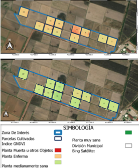
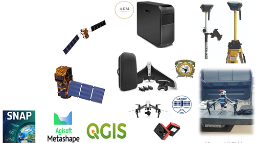
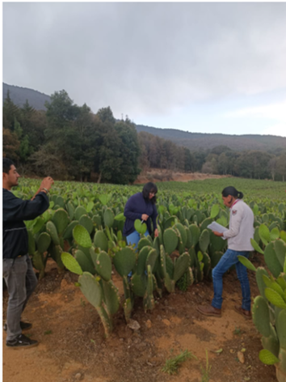

(722) 21 43 182 (722) 21 50 255
agrovisualizador ambiental y de riesgos Mexicano
Sistema que recopila, organiza, administra, analiza, comparte y distribuye información agroambiental sustentable aplicada a nivel de detalle por parcela de siembra
-
Tiempo
¡Obtener datos de salida en tiempo casi real ! para el monitoreo de las parcelas desde la fenología y fitosanitario y se consolide como una herramienta de trabajo para el diseño de estrategias, planes y programas con miras a ofrecer información práctica para la toma de decisiones
 -
Enfoque
Monitoreo de los cultivos mediante el uso de herramientas geotecnologícas y que esto sea amigable para los agricultores que a su vez ayuden en la toma de decisiones
 -
Especialistas
El proyecto se sustenta en una alianza promotora del desarrollo entre la Universidad Autónoma del Estado de México a través de la Facultad de geografía y la Agencia Espacial Mexicana del Gobierno de la republica de México, así como en coordinación del Gobierno Estatal de México a través de la Secretaria del campo y los productores de maíz y nopal en la entidad.
